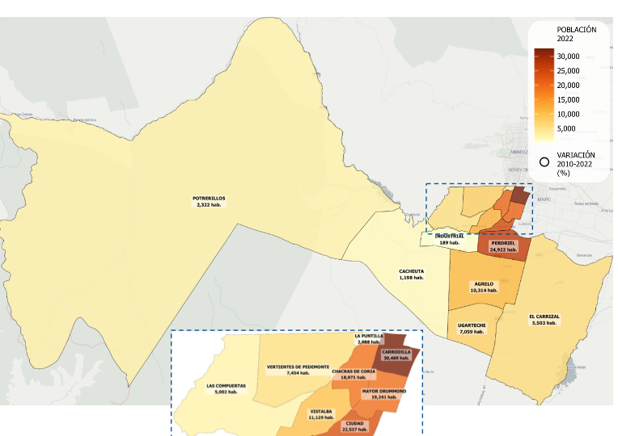
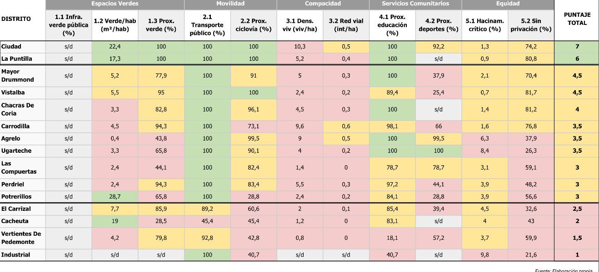

UNIVERSIDAD TORCUATO DI TELLA · ESCUELA DE GOBIERNO
CIPUV — Centro de Investigación de Políticas Urbanas y de Vivienda
Innovación en gestión del suelo
para financiar la adaptación climática
Seis instrumentos de captura de valor · un Fideicomiso · el Índice de Ciudad Deseada
Caso · Luján de Cuyo, Mendoza
Land Value Capture + clima
Clase · 30 minutos
Cátedra de Economía Urbana · MEU · en colaboración con el Lincoln Institute of Land Policy
Hoja de ruta
Lo que veremos en 30 minutos
01 El contexto y la paradoja agua–suelo
02 La idea: captura de valor del suelo
03 Los seis instrumentos
04 La arquitectura: Banco + Fondo + Fideicomiso
05 La regla de gasto: Índice de Ciudad Deseada
06 Números, equidad y co-beneficios
02 / 25
La idea en una frase
Cuatro verbos, un sistema
1 · Capturarla plusvalía que genera el propio desarrollo urbano
2 · Blindarlos recursos en un fideicomiso
3 · Apalancarfinanciamiento climático internacional
4 · Redistribuircon equidad, hacia donde más se necesita
03 / 25
El contexto · 01
Una ciudad que crece con presupuesto de agua
- ~169.000 habitantes (censo 2022) en un oasis semiárido al pie de los Andes.
- Todo el sistema productivo y urbano depende del deshielo andino.
- Dos tendencias en colisión: menos nieve, más urbanización del periurbano regado.
~200 mm
de lluvia al año — el presupuesto de agua de la ciudad
El contexto · 01
¿Dónde crece Luján de Cuyo?
- Carrodilla (30.469) y Perdriel (24.922) concentran el mayor tamaño y crecimiento.
- El avance urbano ocurre sobre el periurbano regado: Chacras, Vistalba, Vertientes.
- Cada distrito que crece urbaniza suelo con derecho de agua → más demanda, menos recarga.
+42,6% · +50.546 hab.
crecimiento intercensal 2010–2022 en Luján de Cuyo

Población por distrito, 2022 · Gran Mendoza y Luján de Cuyo · fuente: Municipalidad de Luján de Cuyo e INDEC
El problema · 01
La paradoja agua–suelo
GANANCIA PRIVADA
Rezonificar un viñedo a loteo multiplica su valor varias veces.
COSTO COLECTIVO
El mismo acto sella el suelo, elimina recarga, sube la demanda de agua y borra el sumidero de carbono.
→ El incremento de valor es la base natural para financiar la adaptación: quien causa el costo, financia la respuesta.
05 / 25
El marco · 02
¿Qué es la captura de valor del suelo?
- El precio del suelo capitaliza la inversión pública, la regulación y el crecimiento.
- Buena parte de ese incremento es «no ganado» por el propietario (George; Glaeser; Duranton & Puga).
- Recuperarlo para la ciudad es eficiente y justo: recae sobre una ganancia que no produjo quien la recibe.
Tradición latinoamericana: valorización (Colombia), CEPACs (São Paulo), Estatuto de la Ciudad (Brasil). La brecha que este caso cierra: unir la LVC con el financiamiento climático (Dunning & Lord, 2020).
06 / 25
Por qué importa · 02
El dinero sigue la capacidad, no la necesidad
USD 147
mil M/año
de adaptación que necesitan las ciudades en desarrollo a 2030 (CCFLA, 2024)
- El financiamiento fluye a las metrópolis con más capacidad, no a las más expuestas (Clifton et al., 2025).
- Las ciudades intermedias quedan atrapadas: sin capacidad no acceden; sin acceso no construyen capacidad.
- La salida: generar recurso propio, predecible y blindado — la «llave» que pide el financista.
07 / 25
La innovación · 02
Un sistema, no instrumentos sueltos
01
Crear valor
obra · rezonificación
02
Capturar
6 instrumentos LVC
03
Blindar
Banco + Fondo + Fideicomiso
04
Redistribuir
Índice de Ciudad Deseada
05
Apalancar
bono verde · multilaterales
La coordinación es lo que convierte 6 cargos modestos en un sistema bancable.
08 / 25
SECCIÓN 03
Los seis instrumentos
Cada uno captura el incremento de valor en un punto distinto del ciclo de desarrollo.
1 · Contribución por Mejoras
2 · Participación en Valoración
3 · Sobretasa a baldíos
4 · Suelo Creado / DCA
5 · Incentivos fiscales
6 · Transferencia de Derechos
Instrumento 1 · 03
1
Contribución por Mejoras
DISEÑADO
- Recupera parte del mayor valor que una obra pública genera en los inmuebles vecinos.
- Tasa: 30–50% del incremento en una «zona de beneficio» delimitada por SIG.
- Doble función: financia la obra hídrica y demuestra, en efectivo, que rindió.
10 / 25
Instrumento 2 · 03
2
Participación en la Valoración
DISEÑADO
- Recupera parte de la plusvalía por rezonificación o mayor intensidad de uso.
- Tasa: 30–50% del diferencial de valor antes / después.
- La lógica del sistema en miniatura: el acto que genera el costo es el que paga la respuesta.
11 / 25
Instrumento 3 · 03
3
Sobretasa a Inmueble Ocioso
● OPERATIVO
- Aporte de las parcelas servidas pero ociosas dentro del perímetro urbano.
- Recargo progresivo: +100% estándar y +200% en vacíos prioritarios.
- Promueve el desarrollo compacto usando el padrón que ya existe.
5.315
lotes alcanzados (2026)
~ARS 345 M
/año ≈ USD 277.500
12 / 25
Instrumento 4 · 03
4
Suelo Creado / DCA
DISEÑADO
- Vende el derecho a construir por encima de una «línea de base».
- Modelo CEPAC (São Paulo) adaptado a ciudad intermedia.
- COS 2026: de 10 m a 36 m (~8,7 pisos extra) sólo vía compra; bonos por eficiencia hídrica.
13 / 25
Instrumentos 5 y 6 · 03
Incentivos fiscales · Transferencia de Derechos
5 · INCENTIVOS FISCALES
Un «gradiente verde»: descuentos por eficiencia hídrica, permeabilidad y arbolado. Sin adaptación, cargo pleno; con adaptación, alivio fiscal.
6 · TRANSFERENCIA DE DERECHOS
Proteger recarga, riberas y agro sin comprar el suelo: las zonas emisoras venden derechos a zonas receptoras vía mercado.
14 / 25
(+) EL INSTRUMENTO ESTRELLA
Aporte de Agua y Cloaca — la evidencia más fuerte
● OPERATIVO
Prueba de concepto, en efectivo: un cargo ligado al suelo escala en pocos años.
Síntesis
Los instrumentos de un vistazo
| Instrumento | Disparador | Tasa / base | Estado |
|---|
| Contribución por Mejoras | Obra pública | 30–50% del incremento | DISEÑADO |
| Participación en Valoración | Rezonificación | 30–50% del diferencial | DISEÑADO |
| Sobretasa a baldíos | Lote ocioso servido | +100% / +200% | ● OPERATIVO |
| Suelo Creado / DCA | Edificar sobre la base | Mercado (COS 2026) | DISEÑADO |
| Incentivos fiscales | Diseño climático | Alivio variable | DISEÑADO |
| Transferencia de Derechos | Zona receptora | Mercado | DISEÑADO |
| Aporte Agua y Cloaca | Nuevo desarrollo | Tarifaria | ● OPER · 11× |
En concreto · 03
¿Y esto a quién le toca?
Un baldío servido y ociosoPaga la sobretasa (+100% / +200%). El incentivo es claro: construir o vender, no especular.
Un loteo o rezonificaciónAporta parte del mayor valor que la ciudad le crea (30–50% del diferencial).
Una familia en su viviendaNo paga ningún cargo nuevo. Y puede acceder a alivios por eficiencia hídrica y arbolado.
Paga quien se beneficia del cambio de suelo — no el vecino que ya vive en su casa.
La arquitectura · 04
¿Por qué un Fideicomiso?
- Recurso blindado, legalmente separado del presupuesto general.
- Es el «colateral» que un banco o un bono puede ver y auditar.
- Gobernanza que blinda los recursos entre gestiones: directorio + externos, auditoría publicada.
60% Inversión en infraestructura
25% Operación y mantenimiento
15% Cuenta de Apalancamiento
Garantías y gestión · 04
No es una caja: controles y primeras obras
CONTROLES
Directorio con un externo del Concejo.
Auditoría independiente con informe público.
Mayoría calificada: blindado entre gestiones.
PRIMERAS OBRAS
Microplazas en distritos D/E (ARS 1.200 M).
Red hídrica prioritaria donde más falta.
Plan de arbolado y permeabilidad.
Reglas claras + obras visibles el primer año: así se sostiene política y socialmente.
De recurso propio a capital global · 04
La escalera de apalancamiento
01 · Matching — La Cuenta de Apalancamiento (~USD 0,45 M/año) ancla la contrapartida de 10–30%.
02 · Emitir — Bono verde de 3–4× la recaudación anual (~USD 9–12 M).
03 · Escalar — El historial abre facilidades mayores: CAF, BID, GCF.
La credibilidad, como el capital, se acumula.
18 / 25
La regla de gasto · 05
Índice de Ciudad Deseada (ICD)
1 · Espacios verdes
2 · Movilidad
3 · Compacidad
4 · Servicios
5 · Equidad
6 · Infraestructura agua
Escala A (≥90%) … E (<25%). Menor nota = mayor prioridad: el dinero va a la necesidad.
La regla de gasto en acción · 05
Índice de Priorización de Infraestructura
- Traduce el ICD en un diagnóstico territorial: 6 ejes, 10 indicadores, distrito por distrito.
- Cada indicador se compara con un valor deseado y se clasifica en tres niveles.
- Orienta la inversión hacia las brechas reales, no hacia la capacidad de gasto.
ÓPTIMO
MÍNIMO
CRÍTICO
Compacidad — la dimensión más crítica
Movilidad — la mejor cubierta (80% óptimo)
Equidad — ningún distrito llega al óptimo
Ranking general: Ciudad y La Puntilla lideran; Industrial y Vertientes de Pedemonte muestran las mayores brechas.
Ejercicio piloto CIPUV–UTDT · fuente: Municipalidad de Luján de Cuyo e INDEC
El diagnóstico · 05
Puntaje de infraestructura por distrito
Puntaje ICD /11
≥ 5 · lidera
3–4,5 · medio
≤ 2,5 · déficit
Menor puntaje = mayor prioridad de inversión. El índice manda el dinero a Industrial, Vertientes y Cacheuta — no a Ciudad.
Síntesis · 05
Tabla Síntesis: los 11 subíndices
ÓPTIMO
MÍNIMO
CRÍTICO

Cada indicador se pondera sobre 11 puntos: Óptimo 1 · Mínimo 0,5 · Crítico 0 · s/d computa 0. Fuente: elaboración propia CIPUV–UTDT.
La regla que corrige · 05
La regla que decide dónde invertir
- Sin regla, la inversión tiende a ir donde ya hay capacidad instalada.
- El ICD invierte esa lógica: prioriza los distritos con mayor déficit (D/E).
- Primer movimiento: microplazas (ARS 1.200 M) a los barrios que más lo necesitan.
El ICD no describe: corrige. Alinea la inversión con la necesidad, no con la capacidad de gasto.
Los números reales · 06
Potencial de recaudación
~USD 1 M
YA se recauda hoy (2 instrumentos operativos)
~USD 3 M
potencial del paquete completo (base)
USD 56 M
brecha de espacio verde → la cierra el bono verde
De ~1 a ~3 con el paquete; y del recurso propio, un salto a decenas con el bono verde.
21 / 25
Equidad · 06
¿Quién paga y quién se beneficia?
PAGA
Quien captura la plusvalía: desarrolladores y dueños de suelo ocioso (bases progresivas).
SE BENEFICIA
El distrito con menor acceso a verde, agua y servicios (vía ICD).
Con suelo inelástico (límite hídrico), la carga recae en el terrateniente → un caso deliberadamente progresivo.
22 / 25
No sólo adaptación · 06
Co-beneficios low-carbon
- Premian el desarrollo compacto y orientado al transporte (TOD): el metrotranvía concentra edificabilidad.
- Menos viajes en auto: menor consumo energético e hídrico per cápita.
- Se evita convertir suelo agrícola y de pedemonte: carbono + recarga preservados.
Adaptación y mitigación: la misma palanca, accionada una sola vez.
23 / 25
PARA DISCUTIR
Cinco preguntas para el debate
?
¿La captura de valor es regresiva o progresiva? ¿De qué depende?
?
¿Por qué un fideicomiso y no el presupuesto general?
?
¿Qué pasa si el take-up de derechos de construcción es bajo?
?
¿Lo replicarías en tu ciudad? ¿Qué instrumento primero?
?
¿Cómo se sostiene políticamente entre gestiones?
Para llevarse
Cuatro ideas
1. Una máquina replicablecapturar → blindar → apalancar → redistribuir
2. Ya funciona~USD 1 M/año se recauda; el paquete llega a ~USD 3 M
3. El fideicomiso es la llaveconvierte recurso local en contrapartida y repago
4. Equidad por diseñoel índice manda el dinero a donde más se necesita
“Una transición justa no se mide por el tamaño del cheque, sino por dónde aterriza.”
25 / 25